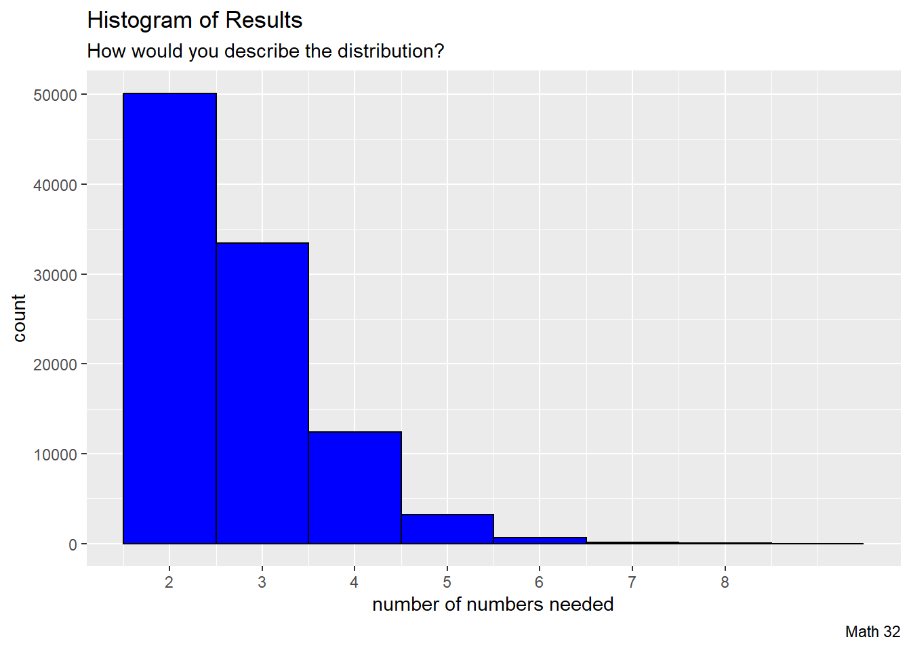

Concepts of probability and statistics. Conditional probability, independence, random variables, distribution functions, descriptive statistics, transformations, sampling errors, confidence intervals, least squares and maximum likelihood. Exploratory data analysis and interactive computing.
Develop probabilistic models of random phenomena.
Infer statistical models from real data.
Apply mathematical methods to probabilistic/statistical models to
Make predictions and
Quantify the uncertainty in these predictions.
Write and run “simple” R programs for the purposes of data analysis, modeling, and visualization.
Solve mathematical problems using analytical methods.
Solve mathematical problems using computational methods.
Recognize the relationships between different areas of mathematics and the connections between mathematics and other disciplines.
Give clear and organized written and verbal explanations of mathematical ideas to a variety of audiences
Model real-world problems mathematically and analyze those models using their mastery of the core concepts.
no, work may not be done in another language (e.g. Python)
no, work may not be done in another IDE (e.g. VS Code)
10 to 20 minutes per week
20 percent of semester grade
classical math textbook homework
advice: do most of the work during your discussion section
10 percent of semester grade for discussion section participation
TA will track attendance
advised to work on written and computer assignments during discussion sections
5 percent of semester grade
graded quickly on effort and completion
5 to 10 minutes per survey
Exam 1: 10 percent of semester grade (Tuesday, Sept. 27)
Exam 2: 15 percent of semester grade (Tuesday, Nov. 1)
Final Exam: 15 percent of semester grade (date TBD, see survey)
Student Accessibility Services
Special Accommodations: University of California, Merced is committed to creating learning environments that are accessible to all. If you anticipate or experience physical or academic barriers based on a disability, please feel welcome to contact me privately so we can discuss options. In addition, please contact Student Accessibility Services (SAS) at (209) 228-6996 or disabilityservices@ucmerced.edu as soon as possible to explore reasonable accommodations. All accommodations must have prior approval from Student Accessibility Services on the basis of appropriate documentation. If you anticipate or experience barriers due to pregnancy, temporary medical condition, or injury,please feel welcome to contact me so we can discuss options. You are encouraged to contact the Dean of Students for support and resources at (209) 228-3633 or https://studentaffairs.ucmerced.edu/dean-students.
Academic Integrity
Academic integrity is the foundation of an academic community and without it none of the educational or research goals of the university can be achieved. All members of the community are responsible for its academic integrity. Existing policies forbid cheating on examinations, plagiarism and other forms of academic dishonesty. The UC Merced Academic Honesty Policy The UC Merced Academic Honesty Policy can be found on the Student Conduct website. Infractions against academic integrity will incur consequences such as an “F” on the assignment/exam and/or a report to the Academic Senate.
Nerdy Example
How many numbers between zero and one do we have to add up to have a sum that is greater than one?
Assume selection from a uniform distribution
Cumulative Summation
Let us start with the natural numbers
\[i = \{1, 2, 3, ...\}\]
Then cumulative summation takes place with
\[F(n) = \sum_{i = 1}^{n} i\]
Cumulative Summation
In R, we can define a sequence of natural numbers
natural_numbers <-1:10print(natural_numbers)
[1] 1 2 3 4 5 6 7 8 9 10
and then employ the cumsum() function to perform the cumulative summation.
cumsum(natural_numbers)
[1] 1 3 6 10 15 21 28 36 45 55
Random Number Generation
In R, we generate a random number between zero and one (here: assumed from a uniform distribution) with the runif function.
runif(1)
[1] 0.81505
From there, we can (for example) produce a sample of \(n = 32\) such random numbers
and then we can check when our cumulative summation first exceeded 1.0
which.max(X >1.0)
[1] 3
Simulation
To try to understand the randomness, we can repeat the procedure for many iterations (here, \(N = 10000\)).
N <-1e5#number of iterationsour_results <-rep(NA, N) #initialize space for resultsfor(i in1:N){ this_vector <-cumsum(runif(10)) this_result <-which.max(this_vector >1.0) our_results[i] <- this_result}
Visualization
To understand a distribution of a probabilistic setting, we can visualize the results.
df <-data.frame(our_results)df |>ggplot() +geom_histogram(aes(x = our_results), binwidth =1,color ="black", fill ="blue") +labs(title ="Histogram of Results",subtitle ="How would you describe the distribution?",caption ="Math 32",x ="number of numbers needed",y ="count") +scale_x_continuous(breaks =seq(2,8))

Measure of Centrality
To hone in on our understanding of the distribution, let us take the mean() of our_results
mean(our_results, na.rm =TRUE)
[1] 2.71847
Note: R stops execution upon evaluating a missing value. For our intents and purposes, we will suppress that exception with na.rm = TRUE
Nerdy Example
How many numbers between zero and one do we have to add up to have a sum that is greater than one?
\[ e \approx 2.718282\]
# theoretical answerexp(1)
[1] 2.718282
Thought questions:
how do we know that the answer converges?
how many iterations did we need for a sufficient answer?